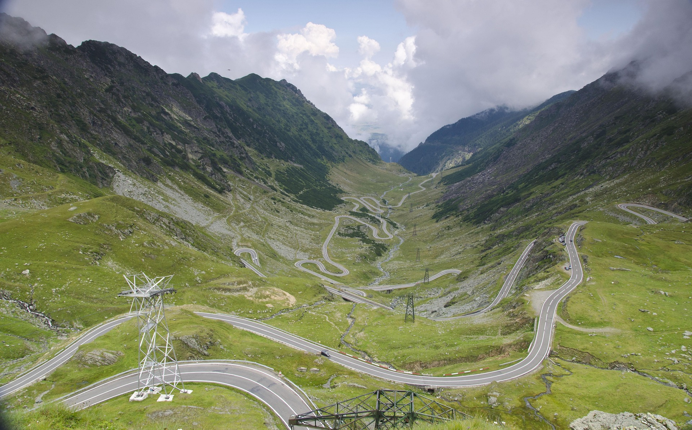
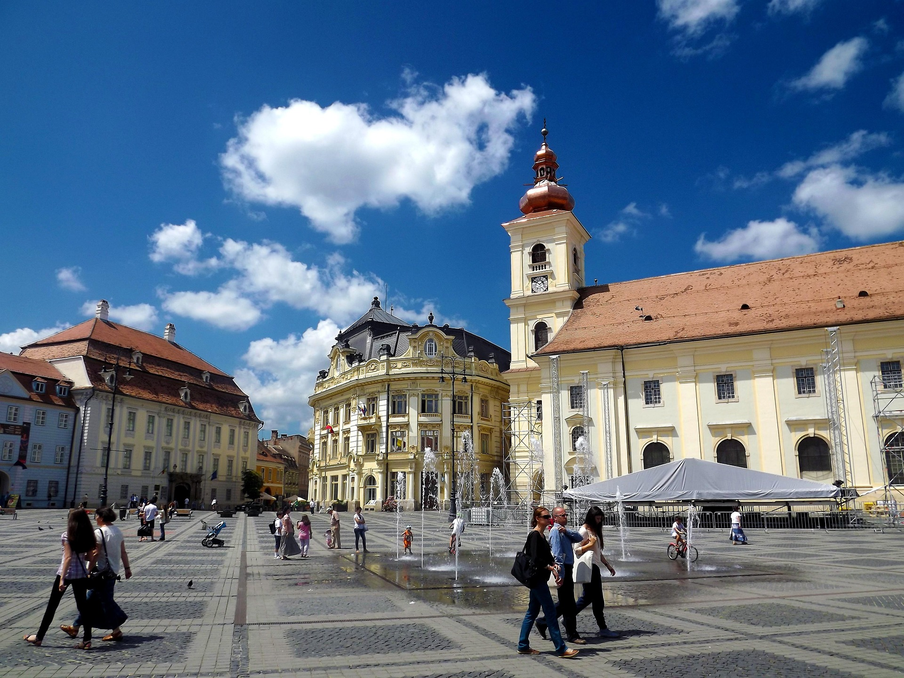
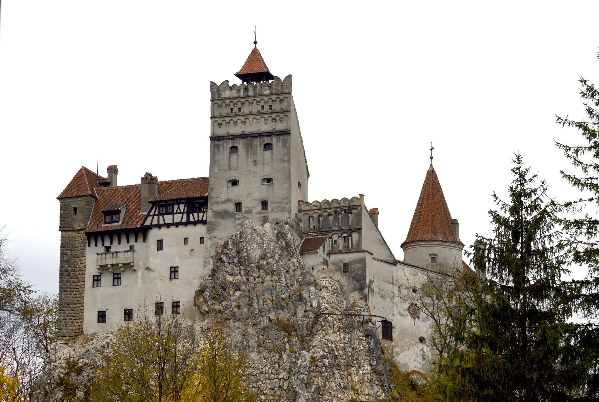
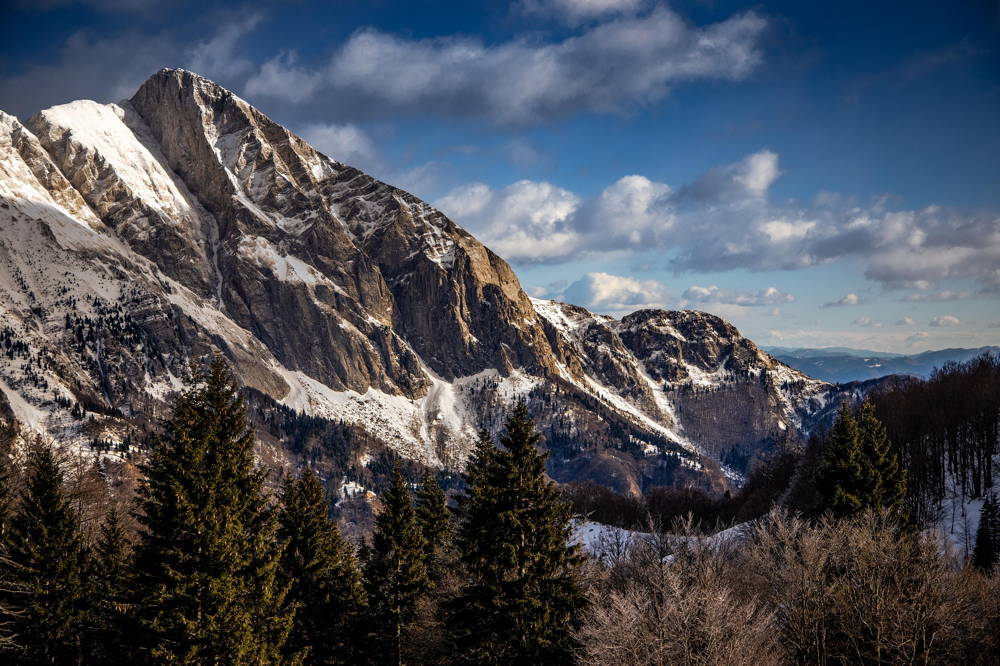
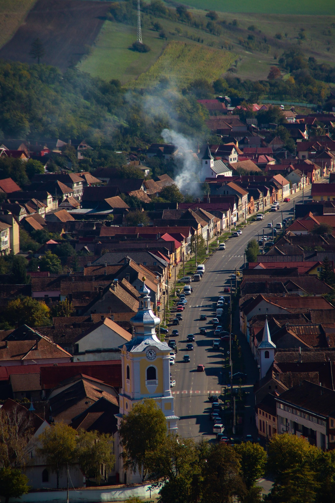
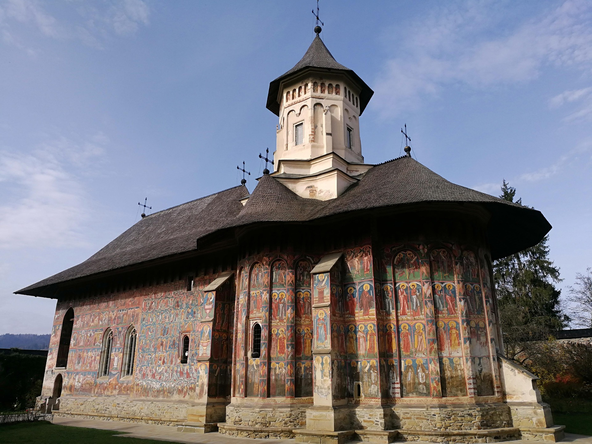
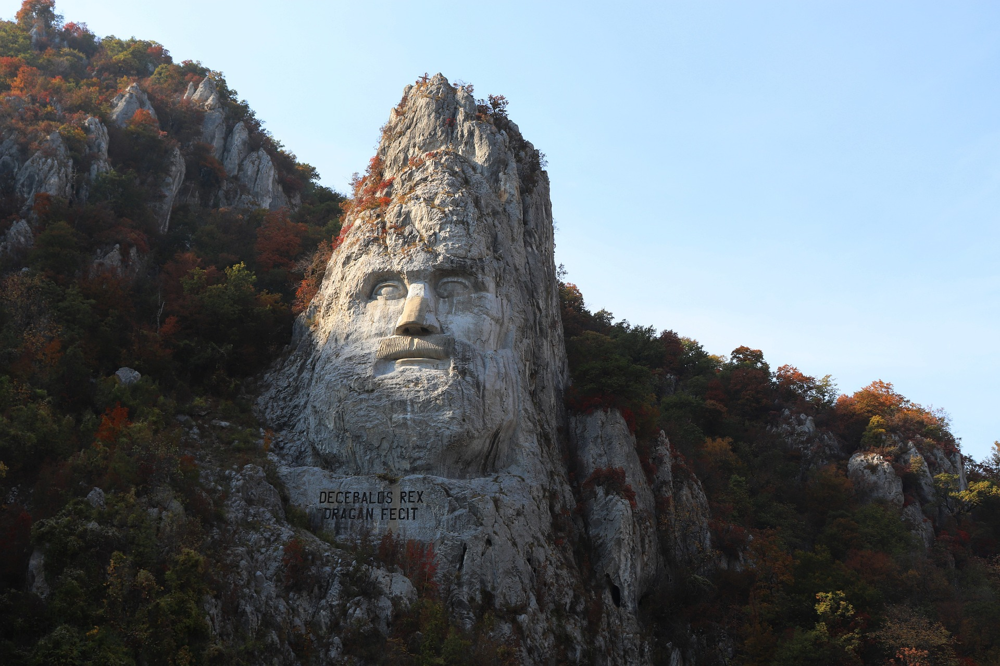
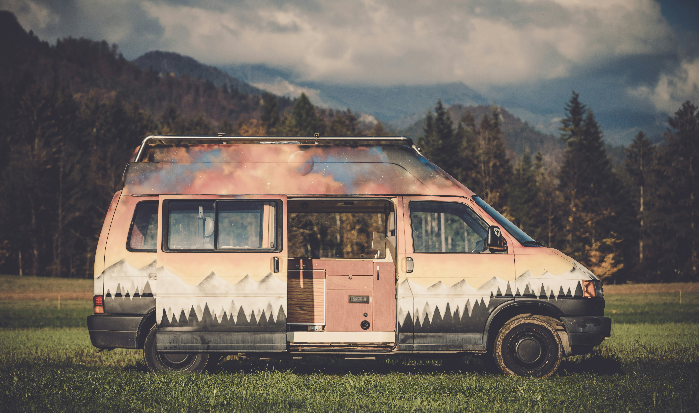
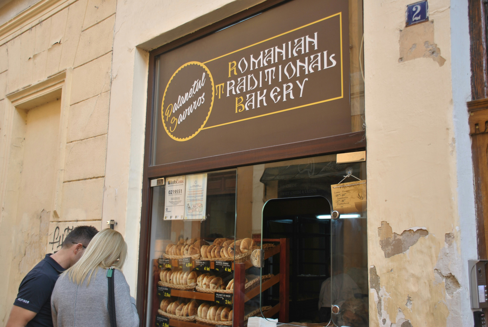

The Carpathians & beyond by campervan — the great alpine roads, medieval towns, wild mountains and living tradition. Written by someone who grew up here.
DAWNROAD
📲 Tap & go: open this on your phone. Green 📍 Navigate = the exact place in Google Maps. Orange 🛏️ Stays = bookable stays & campsites nearby (photos, prices, facilities). Mountain roads & prices change by season — verify before you go.
Why Romania
Europe's last great road-trip secret
Wild, cheap, and staggeringly beautiful — and still uncrowded. You can legally camp almost anywhere in the mountains, your euro doubles, and the roads are the stuff of legend. This is the loop a local would actually drive.
💶 Currency: Romanian Leu (RON), carry some cash. Budget ~€25–35/day is very doable. Best season for the high roads: roughly July–October.
More than a map
What you'll learn on this trip
This guide doesn't just point you somewhere — it teaches. By the end you'll have picked up real, useful skills:
🧭 Plan & navigate a multi-day route with confidence
💶 Budget on the road — currencies, fuel maths, eating well for less
🌍 Read a new culture — customs, history, a few words of Romanian
🔧 Be self-sufficient — power, water, cooking, fixing small problems
Great for first-timers, families and group trips — real skills, learned by doing. (An honest travel guide, not an accredited course.)
A glimpse
Romania, in pictures









🏞️ Oltenia & the Danube (start: Craiova)
The overlooked south: Craiova's romantic 1900s park, then the Danube squeezed between cliffs at the Cazane — watched by Decebal, the last Dacian king, carved 55m tall into the rock.
CraiovaYour start — handsome old centre, the surreal Nicolae Romanescu Park.📍 Navigate
Decebal Rock SculptureEurope's tallest rock carving, towering over the Danube.📍 Navigate
Cazanele Dunării (Danube Gorges)The river squeezed between cliffs — jaw-dropping drives & boat trips.📍 Navigate
StaysBook a base around Craiova / the Danube.🛏️ Stays
🛣️ The legendary alpine roads
Two of Earth's greatest drives. The Transfăgărășan was Ceaușescu's Cold-War escape route (built 1970–74, 2,042m); the Transalpina is even higher and wilder. Both snow-closed Oct–June.
TransalpinaRomania's highest road — wide-open ridgelines through the Parâng.📍 Navigate
Transfăgărășan + Bâlea LakeThe world-famous switchbacks to a glacial lake at 2,000m.📍 Navigate
⚠️ Both high roads usually open only ~July–October (snow closes them). Check before you climb.
🏰 The heart of Transylvania
800 years of Saxon towns — and the Dracula truth: Vlad never lived at "his" Bran Castle; Queen Marie did. Go for the real history (and Sighișoara, where Vlad was actually born).
SibiuSaxon squares, "eyes of the houses" rooftops — Romania's prettiest old town.📍 Navigate
SighișoaraFairytale medieval citadel (UNESCO), birthplace of "Dracula."📍 Navigate
Brașov & Bran CastleMountain town + the castle every visitor wants to see.📍 Navigate
Karst caves, the canyon road through Bicaz Gorge, and Retezat's ~80 glacial lakes — Romania's oldest national park. Big nature, patchy signal, real solitude.
Apuseni MountainsCaves, gorges, ice caves & near-empty back roads.📍 Navigate
Bicaz Gorge & Red LakeA road carved into a canyon — slow, dramatic, unforgettable.📍 Navigate
Retezat National ParkGlacial lakes & true wilderness for hikers.📍 Navigate
🪵 Living tradition: Maramureș & Bucovina
Nail-free wooden churches (UNESCO), the blue, funny crosses of the Merry Cemetery, and Bucovina's painted monasteries — including "Voroneț Blue," a pigment whose recipe is still a mystery.
MaramureșWooden churches, hand-carved gates, the famous "Merry Cemetery."📍 Navigate
Painted Monasteries (Bucovina)500-year-old frescoes glowing on monastery walls (UNESCO).📍 Navigate
StaysGuesthouses & campsites in the north.🛏️ Stays
👑 Prahova Valley & Bucegi
The real fairytale castle: Peleș, King Carol I's royal summer palace (1883) and the first in Europe lit by its own electricity. Above it, the wind-carved Sphinx & Babele rocks of the Bucegi plateau.
Romania's deep-history edge: Constanța was ancient Tomis, where the poet Ovid was exiled in 8 AD. At the southern tip, bohemian Vama Veche — beach camping, live music, sunrise sets. 🎧 Pure Dawnroad territory.
Vama VecheFree-spirited beach + nightlife; camp on the sand.📍 Navigate
Constanța (old Tomis)Casino ruin, Ovid's square, Black Sea history.📍 Navigate
StaysCoast base near Vama Veche / Mangalia.🛏️ Stays
🦢 The Danube Delta
Where the Danube meets the sea: Europe's largest, best-preserved delta — a UNESCO biosphere of reeds, pelicans and water-only fishing villages. You park and take boats.
Tulcea (gateway)Start boat trips into the channels here.📍 Navigate
Sfântu GheorgheEnd-of-the-road delta village, wild beaches.📍 Navigate
StaysBase in Tulcea / Murighiol for boats.🛏️ Stays
Travel smart
What a local wants you to know
🐻 Bears are real
The Carpathians have Europe's largest brown-bear population. Never leave food in/around the van overnight, never approach or feed them, and don't stop on the Transfăgărășan to photograph roadside bears (it's dangerous and illegal). Respect = safety.
🛏️ Camping
Wild camping is widely tolerated in the mountains — arrive late, leave early, leave no trace. For facilities, the orange Stays buttons show bookable campsites & guesthouses with photos and prices.
🚗 Driving
Buy the Rovinietă (e-vignette) online before driving national roads. Mountain roads are slow and winding — plan shorter days. Fuel is widely available; carry cash for small villages.
🍲 Eat like a local
Sarmale, mămăligă, mici, papanași — village guesthouses and markets beat tourist restaurants on both price and soul.
🎧 Roads & rhythms
Soundtrack this road
Every Dawnroad route comes with a Dawnroad Sessions mix by @ahileflo — built to match the drive, from sunrise departures to night-drive switchbacks. Press play, slide the door, go.